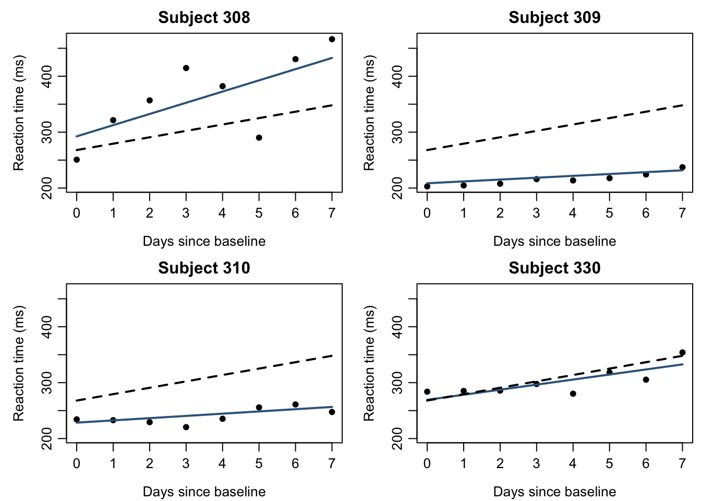

This reading extends linear models to grouped and repeated observations. It is supplementary to the main lecture sequence. Chapters 1, 3, and 7 supply the useful prerequisites: covariance, inference, and the experimental unit. The R examples use lme4; install it once with install.packages("lme4") if needed. The covariance connection to GLS is developed here, so the GLS appendix is not a prerequisite.
G.1 Why group membership changes the analysis
Measurements from the same person, classroom, clinic, or production batch often share influences. Treating all rows as independent can give misleading standard errors. Repeated measurements provide information about within-unit change, but they do not create additional independently sampled or randomized units.
A linear mixed-effects model combines shared regression coefficients with group-specific deviations. Fixed effects describe common coefficients, possibly including measured group characteristics. Random effects represent latent group deviations through a distribution. These terms describe components of the model; they do not mean that a predictor must be nonrandom or that treatment assignment was randomized.
Definition G.1 (A Random-Intercept Model) For observation \(i\) in group \(j\), let
Condition on the observed predictors. Assume that the group effects and residual errors are mutually independent, with the displayed distributions unchanged after conditioning on those predictors. Conditional on \(b_j\), the group has intercept \(\beta_0+b_j\). After integrating over \(b_j\), its mean is \(\beta_0+\beta_1x_{ij}\).
For two distinct observations in the same group, the shared \(b_j\) gives covariance \(\tau^2\); their marginal variances are \(\tau^2+\sigma^2\). Therefore the within-group correlation in this simple model is
This intraclass correlation describes the fraction of conditional-on-predictors variation attributable to a shared group intercept. It is not a universal correlation formula: random slopes or additional residual correlation change it.
with \(b\) and \(\varepsilon\) independent and the design conditioned on. For a known covariance \(V=ZGZ^\top+R\), estimation of \(\beta\) has the GLS form. In practice, the covariance parameters are estimated too, so the exact OLS t/F theory does not transfer unchanged.
ImportantA random intercept does not repair every dependence problem
The basic model assumes independent groups and independent residual errors conditional on the random effects. Serial correlation, household relationships across groups, or an omitted random slope may require a different covariance structure. A random-effects model also does not remove confounding: correlation between group effects and predictors can invalidate its interpretation unless modeled appropriately.
G.2 Partial pooling and shrinkage
Three possible analyses of group means illustrate what the random-effects assumption adds:
Approach
What is shared?
Main tradeoff
Complete pooling
One mean for every group
Ignores genuine group differences.
Separate group means
Each group has its own unrestricted mean
Small groups can have very noisy estimates.
Partial pooling
Groups share a distribution of deviations
Stabilizes estimates using an explicit exchangeability assumption.
Proposition G.1 (Shrinkage in the Intercept-Only Model) For \(Y_{ij}=\mu+b_j+\varepsilon_{ij}\) under the Gaussian assumptions above, suppose \(\mu\), \(\tau^2>0\), and \(\sigma^2>0\) are known. If group \(j\) has \(n_j\) observations, then
The conditional group mean is a weighted average of the observed group mean and the common mean. Small groups have less precise sample means and receive more shrinkage toward the common mean. Larger between-group variation reduces shrinkage.
Why the weight appears. The sample mean contains a group signal \(b_j\) with variance \(\tau^2\) and averaged residual noise with variance \(\sigma^2/n_j\). Conditioning a jointly normal pair yields the signal-to-total-variance weight. Plugging estimated parameters into this expression gives an empirical best linear unbiased prediction (empirical BLUP) in this simple model. More general random-slope models have a matrix version rather than this scalar weight.
n raw_mean mixed_mean weight_on_group_mean
A 3 16.277 14.780 0.647
B 4 9.330 10.117 0.709
C 5 15.146 14.380 0.753
D 6 12.371 12.300 0.786
E 8 12.053 12.051 0.830
F 10 11.601 11.663 0.859
G 12 7.901 8.399 0.880
H 16 11.816 11.837 0.907
I 20 12.033 12.033 0.924
J 24 16.297 16.025 0.936
K 30 8.738 8.909 0.948
L 40 11.989 11.991 0.961
Show R code
c(ICC = tau2_hat / (tau2_hat + sigma2_hat))
ICC
0.3790268
The syntax (1 | group) requests a random intercept for each group. The shared intercept is returned by fixef(), while ranef() returns estimated group deviations. These are different quantities; adding them gives the fitted group mean in this intercept-only example. See the lmer() reference for model syntax.
Figure G.1: Unpooled sample means and partially pooled group means in simulated data. The dashed line is the fitted common mean. The amount of shrinkage reflects group sample size and the estimated variance components.
What shrinkage does not establish. It is not evidence that a small group’s true mean equals the common mean. It reflects uncertainty and the assumed distribution of group effects. Point predictions of group deviations are also not confidence intervals or a justified ranking of all groups.
G.3 Optional application: repeated measurements and random slopes
NoteOptional application: reaction times during sleep restriction
The public sleepstudy data bundled with lme4 contain repeated reaction-time measurements for 18 subjects. Reaction is the average reaction time for a subject on a recorded day, measured in milliseconds. Days 0–1 are adaptation/training and day 2 is baseline. We use baseline and later measurements, with day = Days - 2. The independent grouping unit is the subject. This linear-trend example is not an estimate of a randomized treatment contrast. See the dataset documentation for the study and variables.
A random intercept shifts a subject’s line vertically. A random slope also allows the subject’s rate of change to vary:
Here \(\beta_1\) describes the average linear trend across the modeled subject population, while \(\beta_1+b_{1j}\) is the subject-specific slope. Allowing covariance between \(b_{0j}\) and \(b_{1j}\) recognizes that baseline level and rate of change may be related.
A covariance model as well as a mean model. For two measurements on the same subject, at distinct occasions \(t\) and \(s\), the covariance contributed by the random effects is \(g_{00}+(t+s)g_{01}+tsg_{11}\). Thus correlations can depend on the observation times. One constant random-intercept ICC no longer summarizes the whole dependence structure.
Groups Name Std.Dev. Corr
Subject (Intercept) 30.9573
day 6.7659 0.178
Residual 25.5264
Show R code
lme4::isSingular(fit_sleep)
[1] FALSE
In (day | Subject), the random intercept is included along with the random slope, and their covariance is estimated. This is a model for continuous Gaussian responses. Binary or count outcomes with random effects lead to generalized linear mixed models, which add a link and response family; they require further study beyond this appendix.
Show R code
subjects <-levels(study$Subject)[1:4]plot_grid <-expand.grid(day =seq(0, 7, length.out =40),Subject = subjects)plot_grid$conditional <-predict(fit_sleep, newdata = plot_grid)plot_grid$population <-predict(fit_sleep, newdata = plot_grid,re.form =NA)op <-par(mfrow =c(2, 2), mar =c(3.5, 4, 2, 0.5),mgp =c(2.4, 0.7, 0))for (subject in subjects) { d <- study[study$Subject == subject, ] g <- plot_grid[plot_grid$Subject == subject, ]plot(d$day, d$Reaction, pch =16, ylim =range(study$Reaction),xlab ="Days since baseline", ylab ="Reaction time (ms)",main =paste("Subject", subject))lines(g$day, g$conditional, col ="steelblue4", lwd =2)lines(g$day, g$population, lty =2, lwd =2)}par(op)

Figure G.2: Four subjects from the sleepstudy data. Blue lines include each subject’s fitted random effects; dashed lines use only the common fixed effects. A common linear trend does not require identical subject trajectories.
Prediction target. For a previously observed subject, predictions can use that subject’s estimated random effects. For a new subject with no response data yet, those deviations are unknown; setting them to zero gives the population mean in this Gaussian identity-link model. A prediction interval for the new subject must still include between-subject and residual variation, together with parameter uncertainty. A fixed-effect line alone is not such an interval. With a nonlinear GLMM link, setting random effects to zero generally does not equal averaging the response over their distribution.
G.4 Inference, model checks, and further reading
ML and REML. Maximum likelihood estimates regression and covariance parameters through the marginal model. Restricted maximum likelihood (REML) accounts for the estimation of fixed effects when fitting covariance parameters. When comparing different fixed-effect structures by likelihood, use ML fits on the same observations and keep the specified random-effects structure comparable; the REML criterion is not directly comparable across different fixed-effect designs.
The following comparison asks whether the average linear trend is zero while allowing the same subject-specific random intercept and slope structure in both models. Its likelihood-ratio reference is asymptotic, not Chapter 4’s exact F distribution.
Testing whether a random-effect variance is zero places the null parameter on a boundary. The usual chi-square rule based only on the parameter-count difference need not apply. Small numbers of independent groups also limit large-sample approximations. Methods such as parametric bootstrap or appropriate small-sample corrections need additional justification. Do not use the ordinary OLS F test simply because the model contains a linear predictor.
Check what the design can support. Examine conditional residuals versus fitted values, residual patterns across time and groups, convergence messages, and near-singularity. A singular fit means the fitted random-effects covariance is on or near a lower-dimensional boundary, such as an estimated variance near zero or a redundant intercept/slope combination. It is not synonymous with an optimizer failing to converge. Review the design and model complexity before changing optimizer settings. See isSingular().
Figure G.3: Basic conditional-residual checks for the fitted sleepstudy model. These plots can reveal mean or residual-distribution problems, but they do not prove that the full dependence structure is correct.
Plots of estimated random effects can be informative, but they display shrunken estimates with unequal uncertainty, not directly observed independent normal draws. With few groups, distributional checks are particularly limited. For prediction to new subjects, evaluate with subject-level holdouts; random row-wise splitting can let the same subject appear in both training and test data.
Self-study questions.
Derive the covariance and ICC for the random-intercept model. Explain why increasing observations within a group is different from adding new independent groups.
In the simulation, verify that mu_hat + w_hat * (raw_mean - mu_hat) matches the mixed-model group predictions. Explain the role of \(n_j\).
Write down the fixed and random portions of the sleepstudy model. Explain what changes if (day | Subject) is replaced with (1 | Subject).
Explain why a new subject’s prediction interval is wider than an interval that conditions on known subject effects, and why a row-wise validation split may answer the wrong question.
State the null hypothesis in the ML comparison and explain why testing a random-effect variance of zero is a different inferential problem.
Suggested reading. The authors’ Fitting Linear Mixed-Effects Models Using lme4 develops the model and computation. The package’s inference guide discusses likelihood, bootstrap, and small-sample approaches. Continue to generalized mixed models only after distinguishing conditional and marginal prediction targets in the Gaussian case.